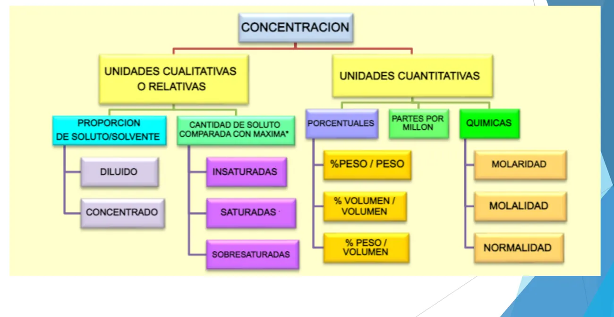
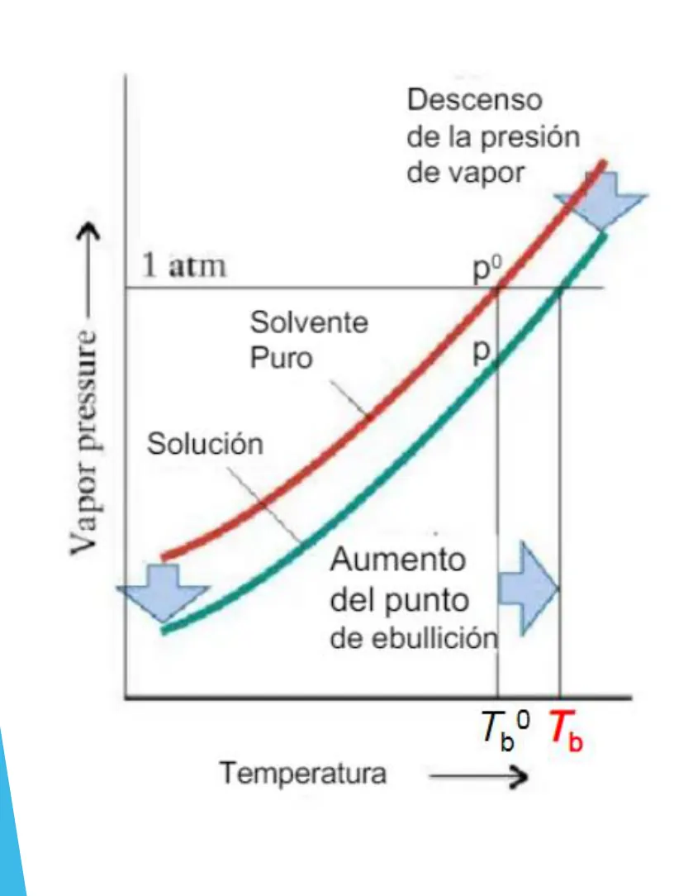

2° parcial
Problemas: estequiometría con reactivo limitante, pureza y rendimiento, gases y soluciones, y lo que se sabe de electroquímica.
Resumen no juzgado. Todavía nadie evaluó si alcanza para estudiar solo con esto.
Materia del pasado. Ya no está en el plan de estudios.
Lo marcado «Plan viejo» es de 2022 o antes, del plan anterior. Puede no coincidir con lo que se toma hoy.
Cómo viene el examen
Revisé cinco archivos. Uno es de 2025, del plan nuevo. Los otros cuatro son de 2021 y 2022, del plan viejo.
Cada uno tiene incisos encadenados y empieza con un párrafo de contexto.
- Una combustión, con un reactivo gaseoso impuro medido en CNPT. Pide volumen de un producto a otra presión y temperatura, ese volumen a otra temperatura, y moléculas de otro producto.
- Dos soluciones que reaccionan, una en % P/P con densidad y otra en molaridad. Pide reactivo en exceso y cuánto, masa de sal y concentración final en % p/v, y comparar con un valor comercial.
- Una celda electrolítica con rendimiento. Pide semirreacciones, si se llega a una masa diaria con dos sales posibles, y cuál conviene por costo. Mirá qué se sabe.
La hoja dice «Química General», no «Química ISI». Puede ser un parcial común a varias carreras.
Los cuatro piden reactivo en exceso o limitante, masa o moles de un producto, volumen de gas con , soluciones y pureza. Tres incluyen rendimiento. El de 2021 es de opción múltiple en el campus. El recuperatorio de 2022 trae puntaje: 3, 1, 2, 2 y 2.
El problema 1 de 2025 tiene el mismo esquema que el ejercicio 14 de la guía de soluciones, y el 2 se parece al 31. La guía trae la respuesta impresa, así que podés practicar ahí y corregirte.
El método de la estequiometría
Fuente: guía de estequiometría y las diapositivas de resolución de las guías, en Material de Cursado. Los pasos de abajo son los que usan esas diapositivas.
Una ecuación igualada expresa las relaciones cuantitativas entre las sustancias. Conociendo la ecuación y las masas atómicas se pueden hacer todos los cálculos (guía, pág. 1).
- Escribí las fórmulas a partir de los nombres. Mirá la nomenclatura.
- Balanceá la ecuación.
- Debajo de cada sustancia, poné moles y gramos, con la masa molar por el coeficiente. Comprobá que reactivos y productos sumen lo mismo.
- Pasá lo impuro a puro, si hay impurezas.
- Buscá el reactivo limitante, si te dan cantidades de dos reactivos.
- Hacé regla de tres desde el limitante hasta lo que te piden.
- Aplicá el rendimiento, si te lo dan.
- Pasá a la unidad pedida: volumen con gases, moléculas con Avogadro.
Para pasar de una sustancia a otra usás siempre la ecuación balanceada. Las masas solas no alcanzan, porque mandan los coeficientes.
Reactivo limitante
Hay que decir cuál está en exceso y en qué cantidad, y hacer el resto con el limitante. En el del 16/06 se pide además cuánto sobra en moles.
En criollo
Tenés 10 panes y 3 fetas de jamón para armar sándwiches de 2 panes y 1 feta. Sale 3 sándwiches y sobran 4 panes. El jamón es el limitante. No importa de cuál hay menos. Importa cuánto pide la receta de cada uno.
Ácido nitroso con hidróxido de calcio
Reaccionan 50 g de ácido nitroso con 30 g de hidróxido de calcio.
2 HNO₂ + Ca(OH)₂ → Ca(NO₂)₂ + 2 H₂O, con 94 g + 74 g → 132 g + 36 g.
Cuánto hidróxido pide el ácido:
Hay solo 30 g, así que se acaba antes. El limitante es Ca(OH)₂. El exceso es HNO₂:
Sobran g. La sal sale del limitante:
La guía imprime 53,51 g y 11,89 g de exceso.
Guía de estequiometría, ejercicio 7, y su resolución en Material de Cursado, págs. 2 y 3
Lo que se calcula después
Una vez que encontraste el limitante, todo lo demás sale de él. El exceso no se usa para calcular productos. La referencia del final de 2025 también lo remarca.
Rendimiento
La reacción real da menos que lo teórico. El rendimiento compara lo obtenido con lo que daría al 100 %.
Cinc con ácido clorhídrico
10 g de cinc dan 18 g de cloruro de cinc. Zn + 2 HCl → ZnCl₂ + H₂, con Zn 65 y ZnCl₂ 136.
Lo que daría al 100 %:
El rendimiento:
La masa real de hidrógeno: al 100 % saldrían 0,31 g, y al 86 % salen 0,266 g. La guía, con masas atómicas más finas, imprime 86,29 % y 0,264 g.
Guía de estequiometría, ejercicio 9, y su resolución en Material de Cursado, págs. 6 y 7
Dos sentidos
Si el enunciado da el rendimiento y pide producto, multiplicás lo teórico por el rendimiento. Obtenés menos. Si pide cuánto reactivo usar para llegar a una cantidad real, tenés que partir de más.
Pureza
Una muestra impura tiene una parte que reacciona y otra que no. Solo la parte pura entra en la ecuación. Un 10 % de impurezas es un 90 % de pureza.
Carbonato de calcio impuro
300 g de CaCO₃ con 10 % de impurezas con HCl en exceso. ¿Qué volumen de CO₂ en CNPT?
CaCO₃ + 2 HCl → CaCl₂ + H₂O + CO₂, con 100 g de carbonato que dan 1 mol de CO₂.
La guía imprime 60,48 litros.
Guía de pureza, ejercicio 2, y su resolución en Material de Cursado, pág. 3
La guía de pureza también pide lo inverso: desde el producto obtenido, calcular la pureza.
Gases
Fuente: apunte de teoría, Unidad 5, y guía de gases.
Un gas no tiene forma ni volumen propios y es muy compresible. Sus partículas se mueven al azar, en línea recta y con choques perfectamente elásticos. Se desprecian las atracciones entre ellas, y su energía cinética promedio varía de manera proporcional con la temperatura (Unidad 5, págs. 2 a 5).
Cuatro variables describen un gas: P, V, T y n (pág. 6).
Temperatura siempre en Kelvin
(Unidad 5, pág. 8). En una ley de gases, los grados Celsius dan cualquier cosa.
Presión: 1,00 atm = 760 mm Hg = 760 torr = 1,01 × 10⁵ Pa (pág. 6). CNPT: 1 atm y 273 K, donde 1 mol de gas ocupa 22,4 L (pág. 17).
Ley de Boyle Mariotte
A temperatura constante, el volumen de una masa definida de gas es inversamente proporcional a la presión que soporta.
Apunte de teoría, Unidad 5, pág. 9
Globo sonda
155 L a 1 atm suben a 0,38 atm, con temperatura constante. , entonces y L.
Apunte de teoría, Unidad 5, pág. 10
Ley de Charles
El volumen de una cantidad fija de gas mantenida a presión constante es directamente proporcional a su temperatura absoluta.
Apunte de teoría, Unidad 5, pág. 11
Expansión a presión constante
1,5 L a 308 K. ¿A qué temperatura llega a 2,6 L? , entonces y K.
Apunte de teoría, Unidad 5, pág. 12
Ley de Gay-Lussac
La presión de una cantidad fija de gas mantenida a volumen constante es directamente proporcional a su temperatura absoluta.
Apunte de teoría, Unidad 5, pág. 13
Pistón a volumen fijo
Gas a 1 atm, de 293 K a 390 K con volumen fijo. , entonces y atm.
Apunte de teoría, Unidad 5, pág. 14
Ecuación de estado de los gases ideales
Y si consideramos que en CNPT las funciones de estado son , y , la Ecuación de Estado se escribe:
Apunte de teoría, Unidad 5, pág. 15
Pasar a condiciones normales
Un gas a 30 °C y 680 mmHg ocupa 50 L. En condiciones normales, 760 mmHg y 273 K:
Apunte de teoría, Unidad 5, pág. 16
Ley de Avogadro
El volumen de un gas mantenido a temperatura y presión constantes es directamente proporcional al número de moles del gas, es decir a la cantidad de gas que hay.
Apunte de teoría, Unidad 5, pág. 17
Sale la constante R
1 mol a 273 K y 1 atm ocupa 22,4 L. Entonces atm·L/(K·mol).
Apunte de teoría, Unidad 5, págs. 17 y 18
Ecuación general de los gases ideales
Esta relación da lugar a la llamada ecuación general de los gases ideales en función de la cantidad de sustancia: , con atm·L/(K·mol), constante universal de los gases.
Apunte de teoría, Unidad 5, pág. 18
Globo de helio
Un globo de 18,0 cm de radio, a 20 °C y 1 atm. L y K, entonces moles. Multiplicando por la masa molar, g de helio.
Apunte de teoría, Unidad 5, págs. 18 y 19
Sirve para chequear un resultado. En el examen va el desarrollo que pide la cátedra.
Densidad de un gas (Unidad 5, pág. 20). Reordenando la ecuación general, . En el ejemplo del apunte, helio a 1 atm y 273 K da 0,18 g/L, y a 60 °C baja a 0,146 g/L.
Ley de Dalton de las presiones parciales
Establece que la presión total de una mezcla de gases es la suma de la presión parcial de sus componentes, , donde la presión parcial de cada gas es la presión que el gas ejercería si fuera el único gas en el recipiente.
Apunte de teoría, Unidad 5, pág. 21
Mezcla en un recipiente
1 L de H₂ a 2 atm, 5 L de N₂ a 4 atm y 2 L de He a 2 atm pasan a un recipiente de 20 L, a la misma temperatura. Cada gas se calcula con Boyle, como si estuviera solo: atm, atm y atm. La total es 1,3 atm. La guía imprime esos valores.
Guía de gases, ejercicio 9
Gases dentro de una reacción
Lo pidieron en todos los 2° parciales que revisé. Primero sacás moles por estequiometría. Después usás con las condiciones que te piden. Si el gas está en CNPT, sale directo con 22,4 L.
Hidrógeno a 27 °C y 2 atm
4 g de cinc con ácido clorhídrico en exceso. Zn + 2 HCl → ZnCl₂ + H₂.
La guía imprime 0,753 litros.
Guía de gases, ejercicio 10, y su resolución en Material de Cursado, pág. 20
Soluciones
Fuente: apunte de teoría, Unidad 6, y guía de soluciones.
Una solución es una mezcla homogénea de dos o más sustancias, perfectamente miscibles. Soluto: la que está en menor proporción o cambia su estado de agregación. Solvente: la que está en mayor proporción o mantiene su estado (Unidad 6, pág. 2). Según el estado hay sólidas, líquidas y gaseosas (págs. 4 a 6). Según el soluto, moleculares, que no conducen, e iónicas, que sí (págs. 7 y 8).

Fuente: Unidad 6, pág. 15.
Unidades de concentración
| Unidad | Significa | Fórmula |
|---|---|---|
| % m/m o % P/P | Gramos de soluto en 100 g de solución | |
| % m/V o % P/V | Gramos de soluto en 100 ml de solución | |
| % V/V | ml de soluto en 100 ml de solución | |
| % P/Psv | Gramos de soluto en 100 g de solvente | |
| Molaridad, M | Moles de soluto por litro de solución | |
| Molalidad, m | Moles de soluto por kg de solvente | |
| Normalidad, N | Equivalentes gramo por litro de solución | |
| Fracción molar, x | Moles del componente sobre moles totales |
Fuente: Unidad 6, págs. 16 a 30, y guía de soluciones, pág. 1.
Solución o solvente
% P/P y molaridad son por solución. Molalidad y % P/Psv son por solvente. Solución es soluto más solvente. Es la confusión típica.
La densidad aparece cuando el dato viene en % P/P pero el volumen es lo que tenés. Para pasar: % m/V = % m/m × densidad de la solución.
Densidad y concentración
% m/V = % m/m x densidad de la solución.
Apunte de teoría, Unidad 6, págs. 20 y 26
De % P/P a % p/v
8 g de soluto y 250 g de agua, con densidad 1,08 g/mL. . Y .
Apunte de teoría, Unidad 6, pág. 21
Molaridad con densidad
NaOH al 20 % m/m, densidad 0,9 g/ml, masa molar 40 g/mol. mol/l.
Apunte de teoría, Unidad 6, pág. 26
Molaridad directa
73 g de HCl en 500 ml de solución, con masa molar 36,5 g/mol. M.
Apunte de teoría, Unidad 6, pág. 23
Sirve para chequear un resultado. En el examen va el desarrollo que pide la cátedra.
Normalidad (Unidad 6, págs. 27 a 29). es la cantidad de H sustituibles en un ácido, de OH en una base, o la carga neta del catión en una sal. Para Al(OH)₃ 2 M, y da 6 N. Para H₂SO₄ 1 M, y da 2 N.
Se pidió cuánto soluto hay en una masa de disolución de molalidad dada. Ojo, la masa es de solución y la molalidad va por kg de solvente.
Preparar, diluir y mezclar
Preparar desde un ácido comercial
HCl comercial al 36 % P/P con densidad 1,2 g/cm³. Se quieren 500 ml 0,1 M.
Moles que hacen falta: , entonces , y con son g.
Concentración del comercial: . Entonces y ml. La guía imprime 4,225 ml.
Guía de soluciones, ejercicio 10, y su resolución en Material de Cursado, págs. 16 y 17
Mezclar dos soluciones
800 ml al 3 % P/V más 200 ml al 10 % P/V, con volúmenes aditivos. Soluto total: g en ml. Queda 4,4 % P/V, como imprime la guía.
Guía de soluciones, ejercicio 9
Diluir con agua no cambia la masa de soluto. Cambia el volumen de solución. El recuperatorio del 29/06/2022 pidió una dilución.
Soluciones que reaccionan
Es el caso que combina todo. Pasá cada solución a gramos o moles de soluto puro, y recién ahí buscá el limitante.
Hidróxido de potasio con ácido hipocloroso
100 cm³ de KOH 4 % P/V con 500 cm³ de HClO 0,01 M. KOH + HClO → KClO + H₂O, con KOH 56, HClO 52,5 y KClO 90,5.
KOH: 4 g en 100 ml, o sea 4 g.
HClO: , entonces mol en 500 ml, que son 0,2625 g.
Lo que pide el ácido: , entonces g de KOH. El exceso es KOH en 3,72 g.
Sal: , entonces g. La guía imprime 0,453 g y 3,72 g.
Guía de soluciones, ejercicio 31, y su resolución en Material de Cursado, págs. 45 y 46
Solubilidad
La solubilidad es la máxima cantidad de soluto que puede disolverse en una cantidad dada de solvente, a presión y temperatura determinadas (Unidad 6, pág. 9). En sólidos en líquidos depende de la naturaleza de ambos y de la temperatura. En general aumenta con ella, y la presión influye muy poco.
| Solución | Contiene |
|---|---|
| Diluida | Poco soluto respecto del solvente |
| Concentrada | Más soluto, sin llegar al límite |
| Saturada | La máxima cantidad posible. Soluto puro y solución en equilibrio dinámico |
| Sobresaturada | Más de lo que se disuelve normalmente. Una perturbación la lleva a saturada |
Fuente: Unidad 6, págs. 10 a 12.
Con una curva de gramos de soluto cada 100 g de agua contra temperatura, se preguntó qué pasa al agregar cierta masa a una temperatura dada. Se resuelve leyendo la curva y comparando con lo que se agrega.
Los gases en líquidos se comportan al revés con la temperatura. Al subirla, baja la solubilidad (pág. 31).
Ley de Henry
La cantidad de gas disuelta en un líquido es directamente proporcional a la presión parcial que ejerce ese gas sobre el líquido.
Apunte de teoría, Unidad 6, pág. 32
Propiedades coligativas
Son las propiedades de las soluciones diluidas que dependen del número de partículas de soluto disueltas, no de su naturaleza. Son cuatro: disminución de la presión de vapor, aumento del punto de ebullición, disminución del punto de congelación y presión osmótica (Unidad 6, pág. 33).
Ley de Raoult
Establece la relación entre la presión de vapor de un componente puro y su presión en la disolución. Raoult encontró que cuando se agregaba soluto no volátil a un disolvente puro disminuía la presión de vapor del disolvente.
Apunte de teoría, Unidad 6, pág. 34
Aumento del punto de ebullición
, con , donde m es la concentración molal de la solución y la constante molal de ebullición.
Apunte de teoría, Unidad 6, pág. 37
Disminución del punto de congelación
, con , donde m es la concentración molal de la solución y la constante molal de congelación.
Apunte de teoría, Unidad 6, pág. 38
Azúcar en agua
85 g de sacarosa (342 g/mol) en 392 g de agua. Molalidad: m.
Con °C·kg/mol: °C, y hierve a 100,329 °C.
Con °C·kg/mol: °C, y congela a -1,179 °C.
Apunte de teoría, Unidad 6, págs. 40 a 42

Fuente: Unidad 6, pág. 37. El soluto baja la presión de vapor. Por eso hay que calentar más para llegar a la presión externa.
Sirve para chequear un resultado. En el examen va el desarrollo que pide la cátedra.
Se pidió calcular el punto de ebullición de una solución de sacarosa, dando otra constante. Usá la que dé el enunciado.
Ósmosis (Unidad 6, págs. 43 y 44). Es el flujo de solvente desde una solución diluida hacia una más concentrada a través de una membrana semipermeable, que deja pasar solvente y no solutos. La presión osmótica es igual a la presión hidrostática de la columna de fluido en equilibrio.
Electroquímica
En el único 2° parcial nuevo del Drive, es uno de los tres problemas. Pide semirreacciones, masa que se obtiene en una celda con corriente, tiempo y rendimiento, y comparar el costo de dos sales. La referencia del final dice que a los de Sistemas les tomaron redox con el método ión-electrón y un ejercicio de leyes de Faraday para calcular la masa depositada.
El Drive no tiene teoría de este tema
Ningún apunte de teoría, guía ni resumen del Drive explica redox, ion-electrón, celdas ni leyes de Faraday. Tampoco está en las 8 unidades. Por eso acá no hay fórmula ni procedimiento. No puedo respaldarlos con el material de la cátedra, y una regla general dicha de memoria puede no ser como la pide la cátedra.
Hacelo así:
- Mirá las clases grabadas.
- Pedile a tu comisión la teoría o la guía de electroquímica.
- Practicá con el problema 3 del parcial de 2025.
Lo que sí podés traer preparado es la nomenclatura de las sales, el rendimiento y el cálculo de número de oxidación.
Quiz del 2° parcial
Elegí una opción para ver la explicación. Las que dicen «Se tomó» salieron de exámenes reales.
- 1
Una vez identificado el reactivo limitante, ¿con cuál se calculan los productos?
Debo basar los cálculos en el reactivo limitante, como dicen las diapositivas de resolución de la guía.
- 2
Una muestra tiene 10 % de impurezas. ¿Qué parte entra en la ecuación?
Solo la parte pura. La resolución de la guía parte de 100 g de muestra que tienen 90 g puros.
- 3
¿En qué unidad va la temperatura en las leyes de los gases?
El apunte dice que siempre se expresa en grados Kelvin. T(K) = t(°C) + 273.
- 4
La ley de Boyle Mariotte dice que, a temperatura constante, el volumen de una masa definida de gas...
Inversamente proporcional a la presión que soporta. .
- 5
Según Dalton, ¿qué es la presión parcial de un gas en una mezcla?
Y la presión total es la suma de las presiones parciales.
- 6
¿Qué indica el % m/V?
Masa de soluto por 100 cm³ de solución. El de 100 g de solución es el % m/m.
- 7
¿Cómo se pasa de % m/m a % m/V?
% m/V = % m/m × densidad de la solución.
- 8
La molalidad se define como...
Molaridad es por litro de solución. Molalidad es por kilogramo de solvente.
- 9
¿Qué le pasa a la solubilidad de un gas en un líquido al aumentar la temperatura?
Disminuye, a diferencia de la mayoría de las soluciones de sólidos en líquidos.
- 10
¿De qué dependen las propiedades coligativas?
Del número de partículas, no de su naturaleza.
- 11
Al disolver un soluto no volátil, el punto de ebullición de la solución...
Baja la presión de vapor, y hay que calentar más para llegar a la presión externa.
Todavía no respondiste ninguna.